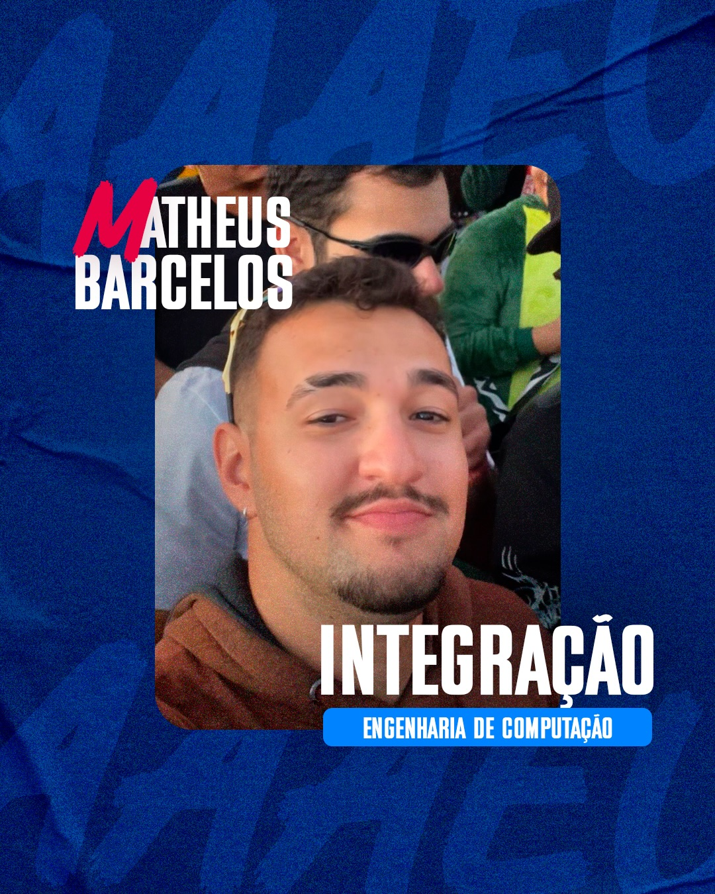

DIRETOR DE INTEGRAÇÃO — ATLÉTICA DE ENGENHARIAS UNIUBE
Atuo como Diretor de Integração na Associação Atlética Acadêmica de Engenharias da Universidade de Uberaba, contribuindo para a organização de eventos, integração entre calouros e veteranos e fortalecimento da comunidade acadêmica do curso.

SOBRE A ATLÉTICA.
O QUE É A ATLÉTICA
A Associação Atlética Acadêmica de Engenharias da Uniube é uma entidade estudantil responsável por representar e unir os alunos dos cursos de engenharia, promovendo esportes, cultura e integração na vida universitária.
OBJETIVOS
Fomentar o espírito esportivo, promover competições entre cursos e universidades, organizar eventos de confraternização e criar uma rede de apoio entre os estudantes de engenharia da Uniube.
MINHA PARTICIPAÇÃO
Como Diretor de Integração, fui responsável pela organização de eventos de recepção de calouros, planejamento de atividades de integração entre turmas e articulação entre a diretoria e o corpo discente.
MINHA ATUAÇÃO
A experiência como Diretor de Integração foi fundamental para o meu desenvolvimento pessoal e profissional. Aprendi a trabalhar em equipe, liderar projetos, gerenciar prazos e comunicar ideias de forma clara a diferentes públicos.
Participar ativamente da vida universitária além da sala de aula me trouxe habilidades complementares à formação técnica em Engenharia da Computação, como organização de eventos, mediação de conflitos e construção de relacionamentos dentro do ambiente acadêmico.
Acredito que a vivência em entidades estudantis forma profissionais mais completos, capazes de entender e contribuir com ambientes colaborativos — algo cada vez mais valorizado no mercado de tecnologia.